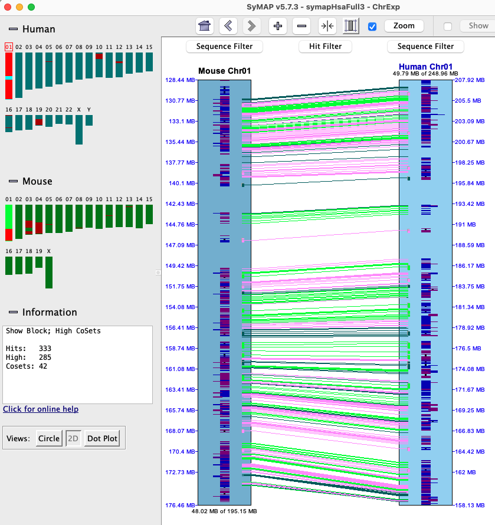
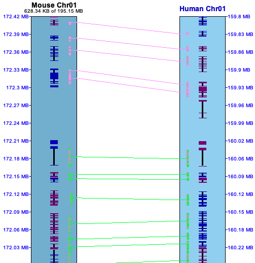

Details of Collinear sets
Using the Hit Filter, or right click in the hit region, set the highlighting for Collinear Sets.
As shown below, the number of highlighted collinear hits and number of collinear sets will be shown in
the Information box.

|
In the image on the right, two different sets are shown (green highlighted hits is the 1st set,
pink is the 2nd). They were broken up by a gene on each chromosome
that do not have a hit.
Forward (=) vs reverse (!=) sets:
a = hit is to the strands (+/+) or (-/-),
a != hit is to the strands (+/-) or (-/+).
All hits in a set are either to the same strand (=) or opposite (!=).
In the image on the right, all genes in both sets are on the same strand.
In the image below, all genes are on opposite strands.

The collinear set algorithm does not consider the amount of overlap of the hit to a gene, or the similarity
of the hit sequences.
|

|
The following are examples of interpreting the 2D view:
|
Sometimes a hit looks like it overlaps a gene, but the gene is actually in the gap, so it is not hit.
This is illustrated on the right, where the 3 genes at the bottom appear hit by the red hit wire,
but in fact are spanned by the gap gray area. Note that the
hit popup shows it is a g0 hit (hits no genes).
|

| | |
| |
The image on the right shows one collinear set with 6 brown hit wires that are not part of the set. The following
explains them, using the symbols g0 (hits 0 genes), g1 (hits 1 gene), g2 (hits paired genes, at
least one on each chromosome).
| 1 | g1 | Ignored, not part of the set since it does not hit paired genes.
| | 2 | g0 | Ignored.
| | 3 | g1 | Ignored since the same gene has a hit to a paired gene.
| | 4 | g0 | Ignored.
| | 5 | g1 | This ends the set since it does not hit a paired gene.
| | 6 | g2 | This could start a new set, but is not followed by another paired gene.
|
As shown earlier, sometimes two genes look as one, so the Gene Delimiter option is important to
view these.

|

|
Known collinear set problems
|
Disclaimer: The collinear sets are not always correct. The benefit of the 2D graphics is that the user can
determine if two sets should be merged or if a set does not appear correct.
The image on the right shows the two biggest problems.
- Overlapping genes: These often break a set in two, as shown on the right. The red highlighted hit
is part of the top collinear set, but the next hit should be too. This caused one set to be broken into two.
- Convoluted hit pattern: The lower green set has a weird hit pattern, where even visually it is hard
to tell what is going on.
|
|
These are the only two problems I have seen, but with so many combinations of hits and overlapping genes, there
are probably others. I can fix most of the overlapping hit problems, but that will take rewriting the hit-to-gene
assignment code; hence, it will be done for another release.
Go to Top
|

{kind=link}
{kind=link}
{kind=link}